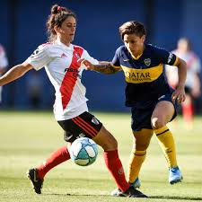

College students are at the heart of our club basketball league
We strongly believe in providing students with the best opportunity for competition, professional development, and fair play. The growth of basketball clubs on
college and university campuses across North America has increased dramatically over the last several years.In 2014, 56 of the 84 teams who competed in the
National Basketball Championships were club teams. Basketball events have become a vital part of our profession’s opportunity to inspire and educate not
only the students playing on club teams, but also the officials who regulate and the staff members who coordinate those events.Because sport clubs are student
organized, participants gain significant experiential learning by developing a constitution, governing themselves, and engaging and participating league
school’sdepartments for guidance in decision making and risk management.The increase in presence of club basketball teams across North America affords us a unique
opportunity to expand on the current Championship Series basketball structure.

Formed in 1878, Everton were founding members of The Football League in 1888 and won their first League Championship two seasons later. Following four League Champions
hip and two FA Cup wins, Everton experienced a lull in the immediate post World War Two period, until a revival in the 1960s, which saw the club win two League
Championships and an FA Cup. The mid-1980s represented their most recent period of sustained success, with two League Championships, an FA Cup, and the 1985
European Cup Winners' Cup. The club's most recent major trophy was the 1995 FA Cup.The club's supporters are known as Evertonians. Everton have a rivalry with
neighbours Liverpool, and the two sides contest the Merseyside derby. The club has been based at Goodison Park in Walton, Liverpool, since 1892, after moving from
Anfield following a row over its rent. The club's home colours are royal blue shirts with white shorts and socks.
PAYMENT:
You can pay online by direct debit as an annual payment or choose to set up monthly payments by clicking one of the relevant links below to be taken to our
payment provider GoCardless - just follow the instructions. (Please note if you choose to pay monthly you are committing to a minimum of 12 payments)
**CATEGORIES OF MEMBERSHIP**
SENIOR MEMBERSHIP
Special 1st Year Price 5000/-rs per month
Playing membership for those aged 30yrs or above.
YOUNG ADULT MEMBERSHIP
Cost 6000/-rs per month
Playing membership for those aged 19yrs to 29yrs.
JUNIOR MEMBERSHIP
Cost 8000/-rs per month
Playing membership for those aged 7-18yrs.